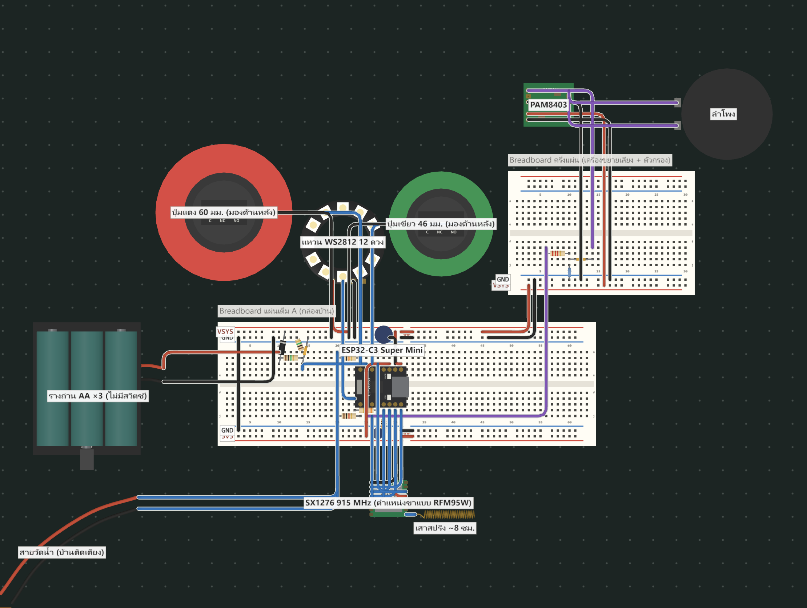
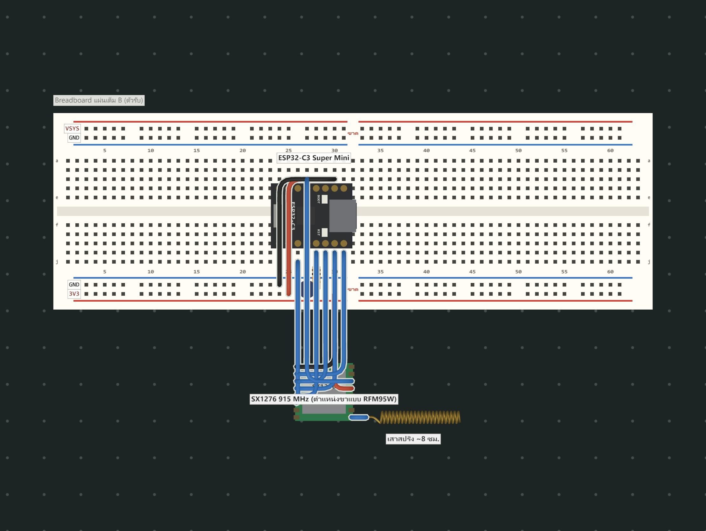

PROOF OF CONCEPT · Hallow Open Hub
กล่องติดบ้านที่คุยกับทีมช่วยเหลือได้สองทาง — ไม่ต้องใช้เน็ต ไม่ต้องใช้มือถือ
คนที่ต้องการความช่วยเหลือมากที่สุด — ผู้สูงอายุอยู่ลำพังและผู้ป่วยติดเตียงที่ไม่มีมือถือ — คือคนที่ระบบเตือนภัยปัจจุบันเข้าไม่ถึง และเมื่อไฟดับ เสามือถือล่ม พวกเขาก็ไม่มีทางบอกใครว่า "ยังอยู่ตรงนี้"
วันปกติ ถ้าผู้สูงอายุล้มหรือมีอาการในบ้าน กดปุ่มเดียว ทีมในชุมชนเห็นทันทีว่าบ้านเลขที่เท่าไร ซอยอะไร มีใครอยู่ ติดเตียงไหม โดยไม่ต้องพูดหรือโทร — ข้อมูลที่อยู่มาจากการลงทะเบียนกล่องตอนติดตั้ง (กล่องติดกับที่ ไม่ต้องใช้ GPS) · เหมือนถังดับเพลิง: ติดไว้ทั้งปี วันที่ต้องใช้ต้องใช้ได้ แม้ไฟดับ เน็ตล่ม
| ข้อความเตือนทางมือถือ | แอป/ปุ่ม SOS ทั่วไป | FloodLink | |
|---|---|---|---|
| ใช้ได้กับคนไม่มีมือถือ | ✗ | ✗ ส่วนใหญ่ต้องมีมือถือ/เน็ต | ✓ กล่องติดบ้าน |
| ใช้ได้ตอนไฟดับ เสามือถือล่ม | ✗ | ✗ | ✓ วิทยุของตัวเอง + ถ่านสำรอง |
| รู้ว่าบ้านไหน "ได้ยินแล้ว / ยังเงียบ" | ✗ | ✗ | ✓ |
| บอกคนในบ้านว่า "ทีมรับเรื่องแล้ว" | ✗ | บางระบบ | ✓ ไฟเหลือง + เสียง |
หน้า 1/6 · FloodLink · ตัวเลขทุกตัวในเอกสารมีที่มา ค่าที่ยังไม่ได้วัดเขียนว่า "ค่าออกแบบ" หรือ "ประมาณการ"
| ส้ม | มีคำเตือน รอคนในบ้านกดตอบรับ | เขียว | ได้ยินแล้ว / ช่วยเสร็จ / แจ้งปลอดภัย |
|---|---|---|---|
| แดง | ขอความช่วยเหลือ (กดแดงค้าง 2 วิ หรือกล่องขอแทน) | เหลือง | ทีมรับเรื่องแล้ว กำลังมา |
| ค่า | ใช้ | เหตุผล |
|---|---|---|
| ความถี่ | 923.2 MHz | ย่าน 920–925 MHz สำหรับอุปกรณ์ทั่วไปในไทย · โมดูลรุ่น "915 MHz" คือรุ่นย่าน ไม่ใช่ความถี่ที่ส่ง |
| กำลังส่ง | 14 dBm | รวมกับเสา (≈0–2 dBi) ไม่เกิน EIRP 17 dBm (50 mW) · โปรแกรมคอมไพล์ไม่ผ่านถ้าตั้งเกิน |
| SF / BW / CR | SF9 / 125 kHz / 4/5 | ไกลกว่า SF7 แต่ข้อความยังสั้น: 12 ไบต์ ≈ 144 ms ต่อครั้ง (คำนวณจากสูตร Semtech) |
| ข้อความ | 10–13 ไบต์ | รหัสพื้นที่ · ชนิด · รหัสบ้าน · ลำดับ · ข้อมูล · รหัสกันปลอม |
หน้า 2/6 · FloodLink
ที่มา: docs/wiring-breadboard.md ข้อ 1 · เลขขาตรงกับ firmware/common/pins.h · ทุกค่า R/C และขาเป็น ค่าออกแบบ รอเช็กกับชื่อขาบนโมดูลจริง
ไฟเลี้ยง กราวด์ ข้อมูล เสียง ว่าง · ↑3V3 = ดึงขึ้น 3V3 · ↓GND = ลง GND
| จุด | ต่อกับ | หมายเหตุ |
|---|---|---|
| ราง VSYS | ขา 5V ของบอร์ด (ได้ไฟจาก USB-C) · ถ่าน AA ×3 ผ่าน D2 1N5819 (แถบไปทาง VSYS) · แหวนไฟ 5V · PAM8403 +5V | C6 470 µF คร่อม VSYS–GND ใกล้บอร์ด |
| ราง 3V3 | ขา 3V3 ของบอร์ด → SX1276 3.3V · R2 · R5 | C7 10 µF + C8 100 nF ชิดขาไฟวิทยุ |
| GND | ทุกชิ้นต่อรวมกัน · รางบนกับรางล่างต่อถึงกัน | Breadboard บางแผ่นรางขาดกลางแผ่น ต้องต่อสายเชื่อม |
หน้า 3/6 · FloodLink

| GPIO | ต่อกับ | GPIO | ต่อกับ |
|---|---|---|---|
| 0 | ปุ่มแดง + สายวัดน้ำเส้นแดง (ผ่าน R7) | 5 / 6 / 7 | วิทยุ MISO / SCK / MOSI (SPI) |
| 1 | วัดแรงดันถ่าน (R3/R4 1 MΩ) | 8 | วิทยุ NSS (R5 10 kΩ ↑3V3) |
| 2 | ปุ่มเขียว (R2 100 kΩ ↑3V3) | 9 | DIN แหวนไฟ (ผ่าน R8 330 Ω) |
| 3 | วิทยุ DIO0 (ส่งเสร็จ/รับได้) | 10 | วิทยุ RESET |
| 4 | ว่าง (สวิตช์ตัดไฟของกล่องจริงรุ่นถัดไป) | 20 / 21 | เสียง PWM → ตัวกรอง → PAM8403 · สายวัดน้ำเส้นดำ (R13) |
หน้า 4/6 · FloodLink

| เรื่อง | ผล | หลักฐาน |
|---|---|---|
| เฟิร์มแวร์กล่องบ้าน ตัวรับ และโปรแกรมทดสอบวิทยุ (4 โปรแกรม) | คอมไพล์สำหรับ ESP32-C3 ผ่าน 0 error | docs/test-logs/a1-compile.log |
| ตรรกะ: ปุ่มสั้น/ค้าง 2 วิ · ส่งซ้ำ · "ยังอยู่" · ขาดการติดต่อ · 1 บ้าน = 1 คำขอ | จำลองบนคอมพิวเตอร์ ผ่าน 52/52 กรณี (ยังไม่ใช่กล่องจริง) | a2-native-tests.log |
| ตัวรับ → แดชบอร์ด (โปรแกรมตัวรับจริงรันบนคอม วิทยุจำลอง) | 23/23 ข้อ ผ่าน | a3-dashboard-serial.log |
| ผังต่อสายตรงกับเอกสารและเลขขาในโค้ด | ตรงทุกเส้น (ตัวเช็กอัตโนมัติจับข้อผิดที่ใส่ไว้ได้ 8/8) | wiring/breadboard-check.js |
| อุปกรณ์จริง | ซื้อครบและได้รับแล้ว | ใบสั่งซื้อ 26 ต.ค. |
| วิทยุส่งไป-กลับ 50 ครั้ง ระยะ 1–3 ม. | [รอผล] / 50 | log สองฝั่ง |
| กดแดง → ตัวรับได้ → ไฟเหลืองกลับมา | [รอผล] / 10 | log + คลิป |
| ระยะส่งในอาคาร / กลางแจ้ง | [รอผล] ม. | แบบฟอร์ม docs/test-plan.md |
ระยะ LoRa จากงานวิจัย (ไม่ใช่ผลของกล่องเรา): ในเมือง เสาสูง 1.5 ม. ส่งได้ราว 1 กม. — Callebaut et al. 2019 · ไกลสุดเกิน 15 กม. บนพื้น (868 MHz, 14 dBm) — Petäjäjärvi et al. 2015 · ระยะของกล่องเราจะใส่หลังวัดจริงเท่านั้น
| ช่วง | ทำอะไร | เกณฑ์ผ่าน |
|---|---|---|
| ตอนนี้ | เช็กชื่อขาบนโมดูลจริง → ต่อตัวรับ → ต่อกล่องบ้าน | วิทยุเริ่มทำงานทั้งสองฝั่ง |
| 8–9 พ.ย. | ทดสอบซ้ำจนใช้งานได้จริง: ส่งไป-กลับ · ปุ่ม · ไฟ · เสียง · ถ่าน · สายวัดน้ำ · ระยะส่ง | ส่งถึง ≥ 96% · กดแดง 10/10 · สีไฟแยกออก |
| หลังทดสอบผ่าน | ประสานงานกับ อบต. เพื่อนำไปลองใช้ในชุมชนจริง เมื่อกล่องทดสอบผ่านจนใช้งานได้ในระดับหนึ่ง | ได้บ้านนำร่องและความเห็นจาก อสม. |
| 14 พ.ย. | สาธิตของจริงที่ สจล. พร้อมผลทดสอบทุกข้อ | ทุกตัวเลขมาจากการวัด |
หน้า 5/6 · FloodLink
| ชิ้นส่วน (กล่องบ้าน) | บาท | ชิ้นส่วน | บาท |
|---|---|---|---|
| ESP32-C3 Super Mini | 125 | PAM8403 เครื่องขยายเสียง | 50 |
| วิทยุ SX1276 915 MHz | 310 | แหวนไฟ WS2812 12 ดวง | 38 |
| ปุ่มแดง 60 มม. / ปุ่มเขียว 46 มม. | 70 / 60 | รางถ่าน AA ×3 · ตัวเก็บประจุ · ไดโอด · ตัวต้านทาน | รวมในยอด |
| ต้นทุนต่อกล่องบ้าน (ถ้าทำเพิ่ม) | ≈ 850 | ต้นทุนตัวรับ 1 จุด (ใช้ร่วมทั้งชุมชน) | ≈ 500 |
| ราคาขายกล่องบ้าน | ≈ 1,445 | ราคาขายตัวรับ | ≈ 850 |
ต้นทุนต่อกล่องรวมกล่องกันน้ำ แผ่นวงจร ลำโพง และถ่าน — ประมาณการ จาก docs/parts.md · ราคาสูงกว่ารุ่นที่ออกแบบไว้เดิมเพราะ SX1276 ที่ซื้อได้ในไทยแพงกว่า · รุ่นผลิตจริงวางแผนใช้ SX1262 (คุยกับ SX1276 ได้)
| ความเสี่ยง | ทางแก้ |
|---|---|
| วิทยุส่งไม่ไกลพอในชุมชน | วัดระยะจริงก่อน · ตั้งตัวรับจุดสูง · เพิ่ม SF · แผนต่อยอด: กล่องช่วยส่งต่อสัญญาณกันเอง |
| คนในบ้านกดไม่ได้ (ติดเตียง หมดสติ) | สายวัดน้ำขอแทนอัตโนมัติ · "ขาดการติดต่อ" เมื่อกล่องเงียบ · บ้านที่ไม่ตอบคำเตือนขึ้นรายการให้ อสม. ไปเคาะ |
| สายวัดน้ำเตือนผิด (ไอน้ำ แมลง) | ต้องแตะน้ำต่อเนื่อง 30 วิ · รอ 2 ชม. ก่อนขอแทน · อสม. ยืนยันก่อนส่งเรือ |
| ถ่านหมดระหว่างไฟดับ | เตือนถ่านอ่อน (< 3.9 V) ทั้งที่กล่องและแดชบอร์ด · รุ่นถัดไปเพิ่มสวิตช์ตัดไฟ |
| กฎหมายคลื่นความถี่ | ล็อกความถี่ 920–925 MHz และ EIRP ≤ 17 dBm ไว้ในโค้ด (คอมไพล์ไม่ผ่านถ้าตั้งผิด) |
หน้า 6/6 · FloodLink · ต้นแบบเพื่อการศึกษา · ค่าที่ยังไม่ได้วัดเป็นค่าออกแบบหรือประมาณการ